Modern Italian plugs and sockets
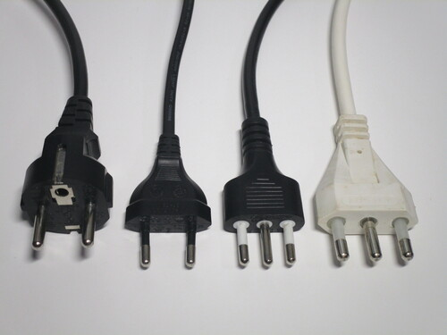 Italian plugs and sockets differ significantly from the ones seen in the rest of continental Europe. Traditionally, Italy has used the "type L" standard, consisting of two plug sizes (10A and 16A) differing in pin diameter and spacing and with a central earth pin.
{kind=link}
While these plugs are still available, few appliances are still sold with them nowadays, as they've been mostly relegated to power strips, extension cords and laptop chargers; instead, the Schuko standard used in other countries in Europe is now ubiquitous. However, the vast majority of household sockets aren't compatible with them, leading many to rely on adaptors.
Standard Italian power sockets
Rating: 16A, 10A 250V
As with the plugs, Italian sockets are available in two sizes, 10A and 16A. These days the latter are most common and tend to be of the "Bipasso" type, which means they accept either size of plug. This wasn't the case originally, as the two plug sizes were initially meant for different power tariffs and thus purposefully incompatible. These older sockets are quite uncommon nowadays, but may still be found in older installations.
Italian sockets (and electrical accessories in general) are entirely modular, with different types of modules that can be connected together to form various combinations of layouts. This particular one is from BTicino as part of their Matix series.
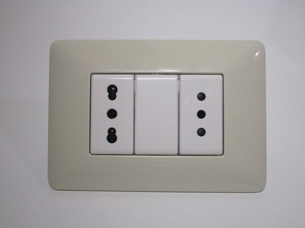 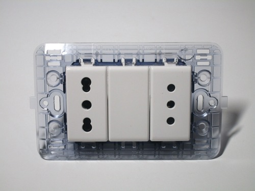 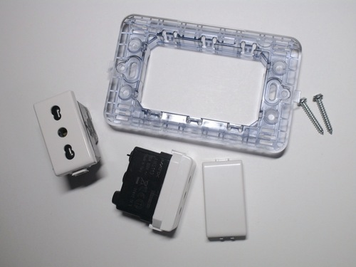{kind=link}
{kind=link}
{kind=link}
Italianised Schuko power sockets
Rating: 16A 250V
As Schuko plugs have been present on appliances for decades, adapted sockets compatible with them are becoming more popular, especially in new installations. Three different types are available in Italy; CEI 23-50 P40, the most common version by far, allows both sizes of traditional Italian plugs to fit as well as Schuko ones.
The most obvious difference compared to conventional Schuko outlets is in the openings for the pins, which resemble the "figure of eight"-shaped slots on Bipasso sockets, but are larger to allow for the thicker (4.8mm) pins of Schuko plugs. Additionally, as 16A plugs tend to be wider, the recess is bigger and often also shallower, as certain types of adaptors wouldn't be able to be inserted otherwise - though it is still deep enogh to protect against accidental shocks.
Their adoption has been quite slow until recently, and Bipasso sockets are still mostly the norm even in new houses. This is due to Schuko sockets being larger - as only one can be installed in a standard Italian 3-module wall box - and more expensive, as well as a lack of any regulation mandating them.
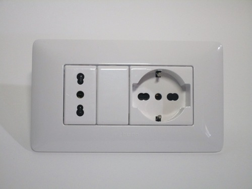{kind=link}
 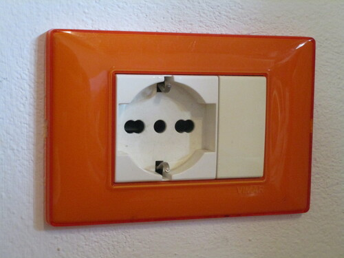
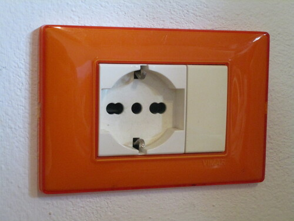
{kind=link}
Standard Italian plugs
These are some example of type L plugs, commonly used in Italy. There are two types, one is rated at 10A and has pins with a diameter of 4.0mm spaced 19mm apart, while the other is rated at 16A and has 4.8mm pins with a spacing of 22mm. This difference is there for a reason: originally, the smaller plugs were meant for lighting while the larger ones were for appliances, and were on different rates and voltages. More info about this is available in the history page.
While nowadays they've mostly been relegated to power strips and extension cords, these plugs are still the most common for manually wiring an appliance, as they're compatible with the vast majority of sockets. This is also why they're the default on adaptors and power strips, though the latter typically have Schuko-compatible sockets.


BTicino "Corner" 10A plug
Rating: 10A 250V
This is one of the many styles of plug available in Italy. It's a "Corner" model made by BTicino, and as the name implies its main feature is that the pins can be set up in one of two positions, on the front or on the side. Having the pins on the side makes this plug take up very little space (only 14mm!), which can be useful for sockets placed behind furniture.
The main problem with this design is that neither of its two position are compatible with a Schuko-style socket. As these are becoming increasingly common, this may cause issues when using appliances fitted with this style of plug.
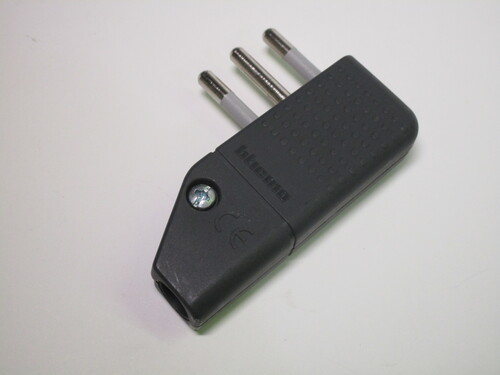 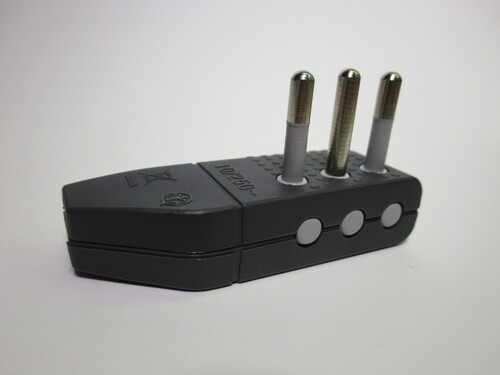 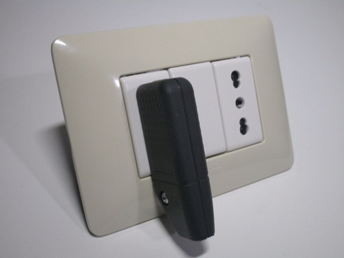{kind=link}
{kind=link}
{kind=link}
Schuko to Italian adaptors
Rating: 1500W 250V
As previously mentioned, it's common for appliances sold in Italy to be fitted with Schuko plugs even though most sockets aren't compatible with them. This has lead to the proliferation of adaptors: simple plastic devices with a Schuko socket at one end and an Italian plug at the other.
Note that, by law, all adaptors (of any type) have to have a maximum rating of 1500W, though their actual physical rating is likely more than that, and they're frequently used for higher loads such as hairdryers and washing machines.
While the idea of using adaptors on a regular basis may seem dangerous - and, to be fair, they do introduce an additional point of failure - keep in mind that these are purpose-built devices that are nothing like the travel adaptors used on holidays.
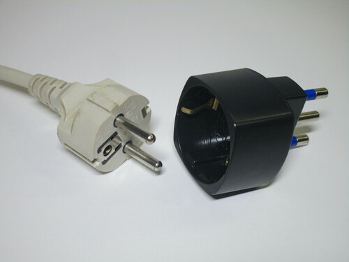 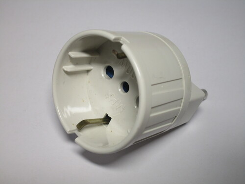 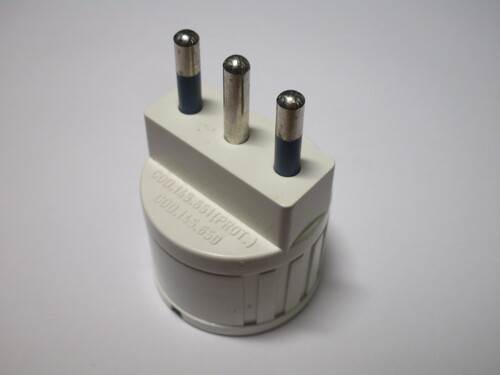{kind=link}
{kind=link}
{kind=link}
Adaptors that do the opposite, that is, allow an Italian plug to be used with a Schuko socket, are also available though obviously not as popular. They still have their uses though, especially for people travelling or living in border regions.
Both styles are available either as stand-alone or multi-way adaptors; the latter, which allow the connection of multiple appliances, typically have two Bipasso sockets and one Schuko one.
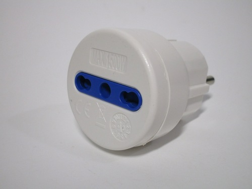 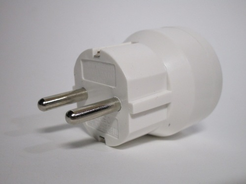 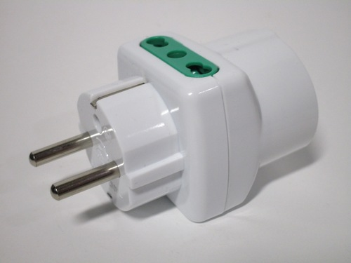{kind=link}
{kind=link}
{kind=link}